Last updated: 2024-05-28
Checks: 7 0
Knit directory: FASHresultsummary/
This reproducible R Markdown analysis was created with workflowr (version 1.7.1). The Checks tab describes the reproducibility checks that were applied when the results were created. The Past versions tab lists the development history.
Great! Since the R Markdown file has been committed to the Git repository, you know the exact version of the code that produced these results.
Great job! The global environment was empty. Objects defined in the global environment can affect the analysis in your R Markdown file in unknown ways. For reproduciblity it’s best to always run the code in an empty environment.
The command set.seed(20240507) was run prior to running
the code in the R Markdown file. Setting a seed ensures that any results
that rely on randomness, e.g. subsampling or permutations, are
reproducible.
Great job! Recording the operating system, R version, and package versions is critical for reproducibility.
Nice! There were no cached chunks for this analysis, so you can be confident that you successfully produced the results during this run.
Great job! Using relative paths to the files within your workflowr project makes it easier to run your code on other machines.
Great! You are using Git for version control. Tracking code development and connecting the code version to the results is critical for reproducibility.
The results in this page were generated with repository version dbdedfe. See the Past versions tab to see a history of the changes made to the R Markdown and HTML files.
Note that you need to be careful to ensure that all relevant files for
the analysis have been committed to Git prior to generating the results
(you can use wflow_publish or
wflow_git_commit). workflowr only checks the R Markdown
file, but you know if there are other scripts or data files that it
depends on. Below is the status of the Git repository when the results
were generated:
Ignored files:
Ignored: .DS_Store
Ignored: .Rhistory
Ignored: .Rproj.user/
Ignored: analysis/.DS_Store
Ignored: analysis/.Rhistory
Ignored: code/.DS_Store
Ignored: code/cpp/.DS_Store
Ignored: code/function/.DS_Store
Ignored: code/function/.Rhistory
Ignored: data/.DS_Store
Ignored: output/.DS_Store
Ignored: output/example/.DS_Store
Ignored: output/example/figure/
Untracked files:
Untracked: code/cpp/Gaussian_just_fixed.o
Untracked: code/cpp/Gaussian_just_fixed.so
Untracked: code/cpp/Gaussian_theta_known.o
Untracked: code/cpp/Gaussian_theta_known.so
Untracked: code/cpp/Poisson.o
Untracked: code/cpp/Poisson.so
Untracked: code/cpp/Poisson_causes.o
Untracked: code/cpp/Poisson_causes.so
Untracked: code/cpp/Poisson_covid.o
Untracked: code/cpp/Poisson_covid.so
Untracked: code/cpp/Poisson_just_fixed.cpp
Untracked: code/cpp/Poisson_just_fixed.o
Untracked: code/cpp/Poisson_just_fixed.so
Untracked: code/cpp/Poisson_just_fixed_causes.o
Untracked: code/cpp/Poisson_just_fixed_causes.so
Untracked: code/cpp/Poisson_just_fixed_covid.o
Untracked: code/cpp/Poisson_just_fixed_covid.so
Untracked: code/function/functions_fitting_Gaussian_eQTL_irregular.R
Untracked: code/function/functions_simulation_eQTL_irregular.R
Untracked: data/13100810.csv
Untracked: data/13100810_MetaData.csv
Untracked: data/expression_data/
Untracked: output/causes/
Untracked: output/expression/
Untracked: output/simulation_eQTL/
Untracked: output/simulation_eQTL_test/
Untracked: output/simulation_pollution/
Unstaged changes:
Deleted: analysis/simulation.Rmd
Modified: analysis/simulation_eQTL.Rmd
Modified: output/example/L_matrix.rda
Modified: output/example/fitted_datasets.rda
Modified: output/example/functional_datasets.rda
Modified: output/example/posterior_weights_matrix.rda
Deleted: output/simulation/L_matrix.rda
Deleted: output/simulation/fitted_datasets.rda
Deleted: output/simulation/posterior_weights_matrix.rda
Note that any generated files, e.g. HTML, png, CSS, etc., are not included in this status report because it is ok for generated content to have uncommitted changes.
These are the previous versions of the repository in which changes were
made to the R Markdown
(analysis/simulation_eQTL_identification.Rmd) and HTML
(docs/simulation_eQTL_identification.html) files. If you’ve
configured a remote Git repository (see ?wflow_git_remote),
click on the hyperlinks in the table below to view the files as they
were in that past version.
| File | Version | Author | Date | Message |
|---|---|---|---|---|
| Rmd | dbdedfe | Ziang Zhang | 2024-05-28 | wflow_publish(files = "analysis/simulation_eQTL_identification.Rmd") |
| html | cae5291 | Ziang Zhang | 2024-05-27 | Build site. |
| Rmd | 05eb705 | Ziang Zhang | 2024-05-27 | wflow_git_commit(c("analysis/simulation_eQTL_identification.Rmd")) |
| Rmd | 238aba2 | Ziang Zhang | 2024-05-27 | wflow_git_commit(c("analysis/simulation_eQTL_identification.Rmd")) |
| html | 6d88425 | Ziang Zhang | 2024-05-24 | Build site. |
| html | 7d1ba2e | Ziang Zhang | 2024-05-24 | Build site. |
| Rmd | a532772 | Ziang Zhang | 2024-05-24 | update eqtl sim |
| html | a532772 | Ziang Zhang | 2024-05-24 | update eqtl sim |
| html | 9e1131d | Ziang Zhang | 2024-05-24 | Build site. |
| Rmd | 513eb20 | Ziang Zhang | 2024-05-24 | wflow_git_commit(c("code/function/functions_fitting_Gaussian_eQTL_test.R", |
We consider the effect size estimate of \(10,000\) eQTLs measured in day \(t = 1\) to day \(t = 16\):
For simplicity, let’s assume the SE of effect estimate is constant over time: \(\text{SE}(\hat{\beta}_{i}(t_j)) = \sigma_i, \forall j\) and hence: \[\hat{\beta}_i(t_j) \sim N(\beta_i(t_j),\sigma^2).\]
Load the required libraries and set the seed.
Note: Using Makevars in /Users/ziangzhang/.R/Makevars [1] 0Note: Using Makevars in /Users/ziangzhang/.R/Makevars [1] 0num_cores <- 4
set.seed(123)
N <- 10000
sigma <- sample(c(0.1, 0.5, 1), size = N, replace = TRUE, prob = c(1/3,1/3,1/3))
set.seed(123)First, we simulate \(7000\) non-dynamic eQTLs:
sizeA <- 7000
data_sim_list_A <- lapply(1:sizeA, function(i) simulate_process(sd_poly = 1, type = "nondynamic", sd = sigma[i]))
par(mfrow = c(2, 2))
for (i in 1:4) {
plot(data_sim_list_A[[i]]$x, data_sim_list_A[[i]]$truef,
type = "l", col = "red", xlab = "Time",
ylim = range(data_sim_list_A[[i]]$truef, data_sim_list_A[[i]]$y),
ylab = "Effect size", main = paste0("eQTL ", i))
points(data_sim_list_A[[i]]$x, data_sim_list_A[[i]]$y, col = "blue")
}
| Version | Author | Date |
|---|---|---|
| 9e1131d | Ziang Zhang | 2024-05-24 |
par(mfrow = c(1, 1))Then, we simulate \(2000\) dynamic eQTLs with linear dynamics:
sizeB <- 2000
data_sim_list_B <- lapply(1:sizeB, function(i) simulate_process(sd_poly = 0.1, type = "linear", sd = sigma[i + sizeA]))
par(mfrow = c(2, 2))
for (i in 1:4) {
plot(data_sim_list_B[[i]]$x, data_sim_list_B[[i]]$truef,
type = "l", col = "red", xlab = "Time",
ylim = range(data_sim_list_B[[i]]$truef, data_sim_list_B[[i]]$y),
ylab = "Effect size", main = paste0("eQTL ", i))
points(data_sim_list_B[[i]]$x, data_sim_list_B[[i]]$y, col = "blue")
}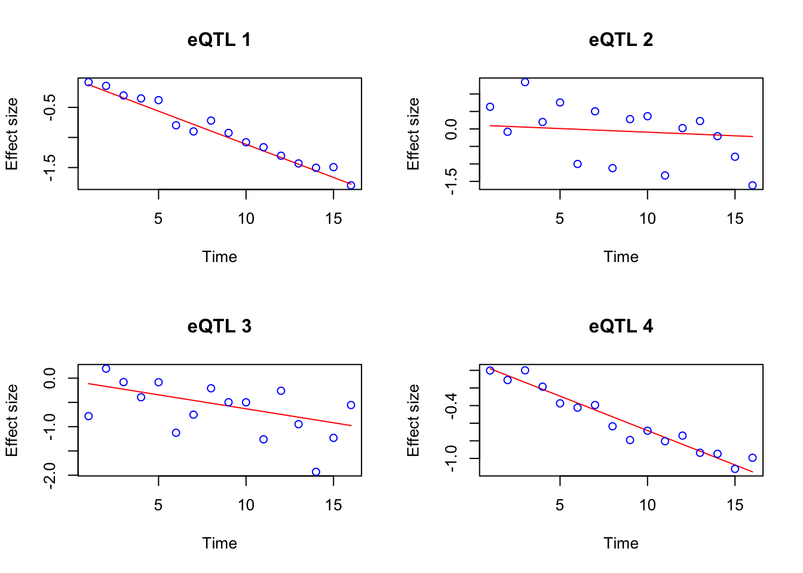
par(mfrow = c(1, 1))Finally, simulate \(1000\) non-linear dynamic eQTLs.
sizeC <- 1000
data_sim_list_C <- lapply(1:sizeC, function(i) simulate_process(sd_poly = 0.1, type = "nonlinear", sd = sigma[i + sizeA + sizeB], sd_fun = 1))
par(mfrow = c(2, 2))
for (i in 1:4) {
plot(data_sim_list_C[[i]]$x, data_sim_list_C[[i]]$truef,
type = "l", col = "red", xlab = "Time",
ylim = range(data_sim_list_C[[i]]$truef, data_sim_list_C[[i]]$y),
ylab = "Effect size", main = paste0("eQTL ", i))
points(data_sim_list_C[[i]]$x, data_sim_list_C[[i]]$y, col = "blue")
}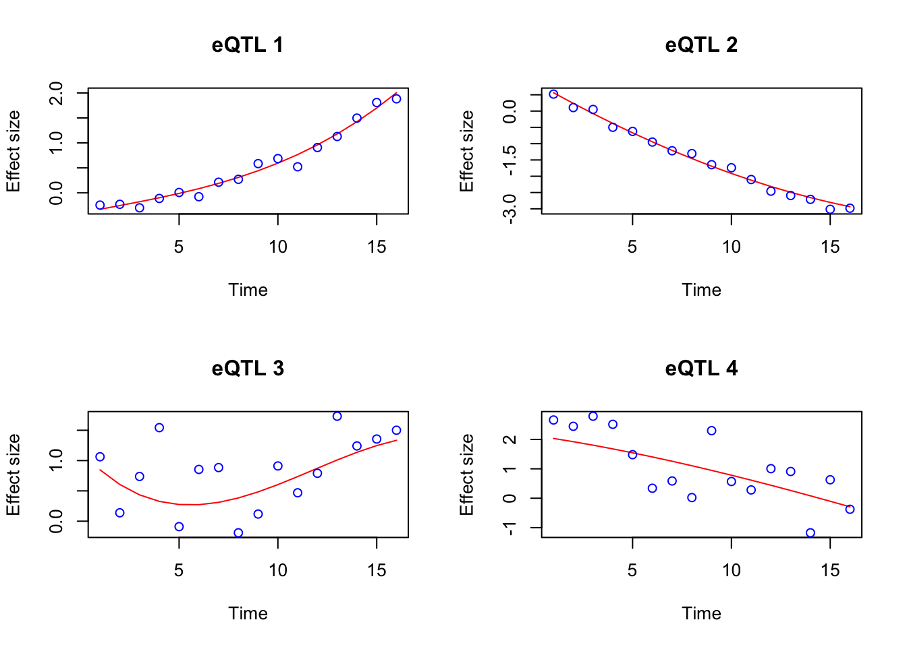
par(mfrow = c(1, 1))
datasets <- c(data_sim_list_A, data_sim_list_B, data_sim_list_C)
sigma <- unlist(lapply(datasets, function(x) unique(x$sd)))We consider the following prior: \[\beta_i(t) = \sum_{k=0}^K \pi_j \text{GP}_k(t),\] where each mixture component is a GP defined by: \[L\beta_k(t) = \sigma_k W(t).\]
The choice of \(L\) specifies the base model (i.e. \(\text{Null}\{L\}\)) for which the effect function \(\beta_i(t)\) is shrunk towards, and the size of \(\sigma_k\) (inversely) controls the strength of the shrinkage. The first mixture component has \(\sigma_0 = 0\) to represent the exact base model.
Let’s consider the question of identifying dynamic eQTLs. The \(i\)th eQTL is considered non-dynamic if its effect \(\beta_i(t)\) is constant over time. To use the FASH method to identify non-dynamic eQTLs, we consider \(L = \frac{d}{dt}\), which corresponds to a constant base model \(\text{Null}\{L\} = \text{span}\{1\}\).
Based on the prior we used, the \(i\)th eQTL should be considered non-dynamic if the posterior weight \(\pi_0\) of the first mixture component is close to \(1\), which implies \(\beta_i(t)\) has high posterior probability of being in \(\text{Null}\{L\}\).
First, we compute the L matrix:
set.seed(123)
p_vec <- 1
psd_iwp_vec <- sort(unique(c(0,seq(0,1, by = 0.05))))
L_vecs <- list()
# create a progress bar
pb <- txtProgressBar(min = 0, max = length(datasets), style = 3)
for (i in 1:length(datasets)) {
setTxtProgressBar(pb, i)
L_vecs[[i]] <- compute_log_likelihood_ospline_seq2(
x = datasets[[i]]$x,
y = datasets[[i]]$y,
p = p_vec,
num_knots = 16,
psd_iwp_vector = psd_iwp_vec,
pred_step = 1,
betaprec = 0.001,
sd_gaussian = sigma[i]
)
}
L_matrix <- do.call(rbind, L_vecs)
save(L_matrix, file = paste0(result_dir, "/L_matrix.rda"))Based on the L-matrix, we optimize the prior weights through EB:
fit.sqp <- mixsqp(L = L_matrix, log = TRUE)Running mix-SQP algorithm 0.3-54 on 10000 x 21 matrix
convergence tol. (SQP): 1.0e-08
conv. tol. (active-set): 1.0e-10
zero threshold (solution): 1.0e-08
zero thresh. (search dir.): 1.0e-14
l.s. sufficient decrease: 1.0e-02
step size reduction factor: 7.5e-01
minimum step size: 1.0e-08
max. iter (SQP): 1000
max. iter (active-set): 20
number of EM iterations: 10
Computing SVD of 10000 x 21 matrix.
Matrix is not low-rank; falling back to full matrix.
iter objective max(rdual) nnz stepsize max.diff nqp nls
1 +6.369732680e-01 -- EM -- 21 1.00e+00 6.52e-01 -- --
2 +5.458925599e-01 -- EM -- 21 1.00e+00 1.59e-01 -- --
3 +5.412017684e-01 -- EM -- 21 1.00e+00 1.12e-02 -- --
4 +5.399516977e-01 -- EM -- 21 1.00e+00 1.16e-03 -- --
5 +5.394670357e-01 -- EM -- 21 1.00e+00 5.36e-04 -- --
6 +5.392413501e-01 -- EM -- 21 1.00e+00 3.02e-04 -- --
7 +5.391214622e-01 -- EM -- 21 1.00e+00 2.14e-04 -- --
8 +5.390504197e-01 -- EM -- 21 1.00e+00 2.42e-04 -- --
9 +5.390040321e-01 -- EM -- 21 1.00e+00 2.41e-04 -- --
10 +5.389710719e-01 -- EM -- 21 1.00e+00 2.30e-04 -- --
1 +5.389459729e-01 +1.961e-02 21 ------ ------ -- --
2 +5.384577706e-01 +1.525e-03 7 1.00e+00 2.26e-02 16 1
3 +5.384574849e-01 +6.714e-06 7 1.00e+00 6.53e-04 2 1
4 +5.384574849e-01 -1.595e-08 7 1.00e+00 4.18e-06 2 1
Optimization took 0.02 seconds.
Convergence criteria met---optimal solution found.numiter <- nrow(fit.sqp$progress)
plot(1:numiter,fit.sqp$progress$objective,type = "b",
pch = 20,lwd = 2,xlab = "SQP iteration",
ylab = "objective",xaxp = c(1,numiter,numiter - 1))
prior_weight <- data.frame(p = rep(p_vec, each = length(psd_iwp_vec)), psd_iwp = psd_iwp_vec, prior_weight = fit.sqp$x)head(prior_weight) p psd_iwp prior_weight
1 1 0.00 0.870950690
2 1 0.05 0.000000000
3 1 0.10 0.016131220
4 1 0.15 0.037954014
5 1 0.20 0.003930784
6 1 0.25 0.041251749The estimated overall proportion of non-dynamic eQTLs is:
prior_weight %>%
filter(psd_iwp == 0) %>%
pull(prior_weight)[1] 0.8709507With the estimated prior, we can now perform the posterior inference for each dataset:
num_datasets <- length(datasets)
num_weights <- sum(prior_weight$prior_weight != 0)
posterior_weights_matrix <- matrix(nrow = num_datasets, ncol = num_weights)
# Loop through each dataset and perform fitting
fitted_datasets <- list()
# start a progress bar
pb <- txtProgressBar(min = 0, max = num_datasets, style = 3)
for (i in seq_along(datasets)) {
setTxtProgressBar(pb, i)
dataset <- datasets[[i]]
fit_result_final <- fit_ospline_with_prior2(
num_cores = 1,
x = dataset$x,
y = dataset$y,
num_knots = 16,
prior_weight = prior_weight,
betaprec = 0.001,
sd_gaussian = sigma[i],
pred_step = 1
)
fitted_datasets[[i]] <- aggregate_fit_with_prior(x = dataset$x, fit_results_with_prior = fit_result_final)$summary_df
posterior_weights_matrix[i, ] <- fit_result_final$posterior_weights[, "posterior_weight"]
}
colnames(posterior_weights_matrix) <- paste(as.character(fit_result_final$posterior_weights[, "p"]),
as.character(fit_result_final$posterior_weights[, "psd_iwp"]), sep = "_")
save(posterior_weights_matrix, file = paste0(result_dir, "/posterior_weights_matrix.rda"))
save(fitted_datasets, file = paste0(result_dir, "/fitted_datasets.rda"))We can visualize the posterior weights for each dataset:
posterior_weights_df <- as.data.frame(posterior_weights_matrix)
posterior_weights_df$id <- c(1:length(sigma))
melted_data <- melt(posterior_weights_df, id.vars = "id")
melted_data$variable2 <- sub("_.*", "", melted_data$variable)
melted_data$variable3 <- (round(as.numeric(sub("*._", "", melted_data$variable)), 3))
ggplot(melted_data, aes(x = id, y = value, fill = variable3)) +
geom_bar(stat = "identity") +
labs(x = "Observation ID", y = "Weight", fill = "PSD") +
theme_minimal() +
scale_fill_gradient(low = "white", high = "blue") +
ggtitle("FASH: Structure Plot of Posterior Weights") +
coord_flip()
Compute the local false discovery rate (lfdr):
set.seed(123)
lfdr <- posterior_weights_matrix[,1]
fdr_df <- data.frame(eQTL = 1:length(lfdr), fdr = lfdr, type = rep(c("A", "B", "C"), times = c(sizeA, sizeB, sizeC)))
fdr_df <- fdr_df[order(fdr_df$fdr), ] # ordering it
fdr_df$cumulative_fdr <- cumsum(fdr_df$fdr)/seq_along(fdr_df$fdr)
fdr_df$rank <- 1:length(lfdr)ggplot(fdr_df, aes(x = 1:length(lfdr), y = cumulative_fdr, col = type)) +
geom_point() +
geom_hline(yintercept = 0.05, linetype = "dashed", color = "purple") +
labs(x = "Ordered eQTLs", y = "Cumulative FDR", col = "Type") +
theme_minimal() +
ggtitle("FASH:Cumulative FDR Plot") +
scale_color_manual(values = c("red", "blue", "green"))
How many false discoveries are there?
alpha <- 0.05
num_discoveries <- sum(fdr_df$cumulative_fdr <= alpha)
num_false_discoveries <- sum(fdr_df$cumulative_fdr <= alpha & fdr_df$type == "A")
true_false_discovery_rate <- num_false_discoveries/num_discoveries
true_false_discovery_rate[1] 0.001549187Plot the curve of nominal false discovery rate (threshold) against the actual false discovery rate:
# Calculate true FDR for FASH
threshold_vec <- seq(0, 1, by = 0.01)
fdr_vec <- numeric(length(threshold_vec))
for (i in 1:length(threshold_vec)) {
num_discoveries <- sum(fdr_df$cumulative_fdr <= threshold_vec[i])
num_false_discoveries <- sum(fdr_df$cumulative_fdr <= threshold_vec[i] & fdr_df$type == "A")
fdr_vec[i] <- num_false_discoveries / num_discoveries
}
# Create a data frame for plotting
fdr_df_fash_for_plotting <- data.frame(threshold = threshold_vec, true_fdr = fdr_vec)
# Plot the nominal FDR vs true FDR for FASH
ggplot(fdr_df_fash_for_plotting, aes(x = threshold, y = true_fdr)) +
geom_line() +
geom_point() +
geom_abline(intercept = 0, slope = 1, linetype = "dashed", color = "purple") +
labs(x = "(Nominal) False Discovery Rate", y = "(Actual) False Discovery Rate") +
theme_minimal() +
geom_hline(yintercept = sizeA/N, linetype = "dashed", color = "red") +
coord_cartesian(xlim = c(0, 1), ylim = c(0, 1)) +
ggtitle("Nominal FDR vs Actual FDR Curve for FASH")
Also compare the number of false discoveries with the number of discoveries at different level of threshold, where number of discoveries is plotted against number of false discoveries:
threshold_vec <- seq(0, 1, by = 0.01)
num_discoveries_vec <- numeric(length(threshold_vec))
num_false_discoveries_vec <- numeric(length(threshold_vec))
for (i in 1:length(threshold_vec)) {
num_discoveries_vec[i] <- sum(fdr_df$cumulative_fdr <= threshold_vec[i])
num_false_discoveries_vec[i] <- sum(fdr_df$cumulative_fdr <= threshold_vec[i] & fdr_df$type == "A")
}
num_discoveries_df <- data.frame(threshold = threshold_vec, num_discoveries = num_discoveries_vec, num_false_discoveries = num_false_discoveries_vec)
ggplot(num_discoveries_df, aes(x = (num_discoveries), y = (num_false_discoveries))) +
geom_line() +
geom_point() +
geom_abline(intercept = 0, slope = 1, linetype = "dashed", color = "purple") +
labs(x = "Number of Discoveries", y = "Number of False Discoveries") +
theme_minimal() +
ggtitle("FASH: Number of False Discoveries vs Number of Discoveries") +
coord_cartesian(xlim = c(0, 3000), ylim = c(0, 3000))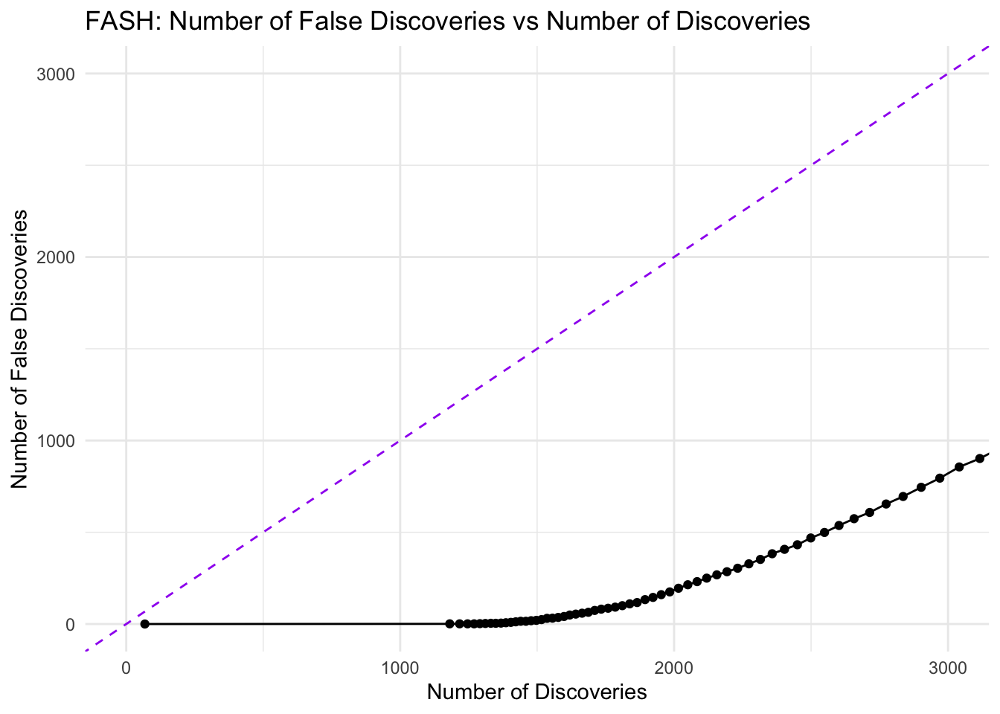
Now, let’s do the comparison with the default implementation of MASH:
fitted_datasets_mash <- list()
# Produce a huge data-matrix, the i-th row being dataset[[i]]$y
all_data_matrix <- do.call(rbind, lapply(datasets, function(x) x$y))
SE_matrix <- matrix(nrow = nrow(all_data_matrix), ncol = ncol(all_data_matrix), sigma)
# now use mashr:
mash_data <- mashr::mash_set_data(all_data_matrix, SE_matrix)
m.1by1 = mashr::mash_1by1(mash_data)
strong = mashr::get_significant_results(m.1by1, 0.05)
# keep the top 10%
strong <- strong[1:round(0.1*length(strong))]
U.pca = mashr::cov_pca(mash_data, 5, subset = strong)
U.ed = cov_ed(mash_data, U.pca, subset=strong)
U.c = cov_canonical(mash_data)
m = mash(mash_data, c(U.c,U.ed))
save(m, file = paste0(result_dir, "/mash_result.rda"))load(paste0(result_dir, "/mash_result.rda"))
mash_post <- m$posterior_weights
## extract the colnames start with "equal_effects"
lfdr_mash <- mash_post[, c(1, grep("equal_effects", colnames(mash_post)))]
# sum each row
lfdr_mash <- rowSums(lfdr_mash)
fdr_df_mash <- data.frame(eQTL = 1:length(lfdr), fdr = lfdr_mash, type = rep(c("A", "B", "C"), times = c(sizeA, sizeB, sizeC)))
fdr_df_mash <- fdr_df_mash[order(fdr_df_mash$fdr), ] # ordering it
fdr_df_mash$cumulative_fdr <- cumsum(fdr_df_mash$fdr)/seq_along(fdr_df_mash$fdr)
fdr_df_mash$rank <- 1:length(lfdr_mash)How many false discoveries are there?
alpha <- 0.05
num_discoveries <- sum(fdr_df_mash$cumulative_fdr <= alpha)
num_false_discoveries <- sum(fdr_df_mash$cumulative_fdr <= alpha & fdr_df_mash$type == "A")
true_false_discovery_rate <- num_false_discoveries/num_discoveries
true_false_discovery_rate[1] 0.06005222ggplot(fdr_df_mash, aes(x = rank, y = cumulative_fdr, col = type)) +
geom_point() +
geom_hline(yintercept = 0.05, linetype = "dashed", color = "purple") +
labs(x = "Ordered eQTLs", y = "Cumulative FDR", col = "Type") +
theme_minimal() +
coord_cartesian(ylim = c(0, 1)) +
ggtitle("Cumulative FDR Plot") +
scale_color_manual(values = c("red", "blue", "green"))
# Calculate true FDR for MASH
threshold_vec <- seq(0, 1, by = 0.01)
fdr_vec_mash <- numeric(length(threshold_vec))
for (i in 1:length(threshold_vec)) {
num_discoveries_mash <- sum(fdr_df_mash$cumulative_fdr <= threshold_vec[i])
num_false_discoveries_mash <- sum(fdr_df_mash$cumulative_fdr <= threshold_vec[i] & fdr_df_mash$type == "A")
fdr_vec_mash[i] <- num_false_discoveries_mash / num_discoveries_mash
}
# Create a data frame for plotting
fdr_df_mash_for_plotting <- data.frame(threshold = threshold_vec, true_fdr = fdr_vec_mash)
# Plot the nominal FDR vs true FDR for MASH
ggplot(fdr_df_mash_for_plotting, aes(x = threshold, y = true_fdr)) +
geom_line() +
geom_point() +
geom_abline(intercept = 0, slope = 1, linetype = "dashed", color = "purple") +
labs(x = "(Nominal) False Discovery Rate", y = "(Actual) False Discovery Rate") +
theme_minimal() +
coord_cartesian(xlim = c(0, 1), ylim = c(0, 1)) +
ggtitle("Nominal FDR vs Actual FDR Curve for MASH")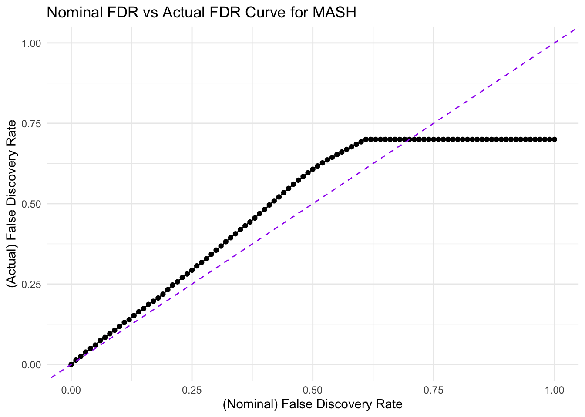
Plot the number of false discoveries against the number of total discoveries for MASH:
threshold_vec <- seq(0, 1, by = 0.01)
num_discoveries_vec <- numeric(length(threshold_vec))
num_false_discoveries_vec <- numeric(length(threshold_vec))
for (i in 1:length(threshold_vec)) {
num_discoveries_vec[i] <- sum(fdr_df_mash$cumulative_fdr <= threshold_vec[i])
num_false_discoveries_vec[i] <- sum(fdr_df_mash$cumulative_fdr <= threshold_vec[i] & fdr_df_mash$type == "A")
}
num_discoveries_df_mash <- data.frame(threshold = threshold_vec, num_discoveries = num_discoveries_vec, num_false_discoveries = num_false_discoveries_vec)
ggplot(num_discoveries_df_mash, aes(x = num_discoveries, y = (num_false_discoveries))) +
geom_line() +
geom_point() +
geom_abline(intercept = 0, slope = 1, linetype = "dashed", color = "purple") +
labs(x = "Number of Discoveries", y = "Number of False Discoveries") +
theme_minimal() +
ggtitle("MASH: Number of False Discoveries vs Number of Discoveries") +
coord_cartesian(xlim = c(0, 3000), ylim = c(0, 3000))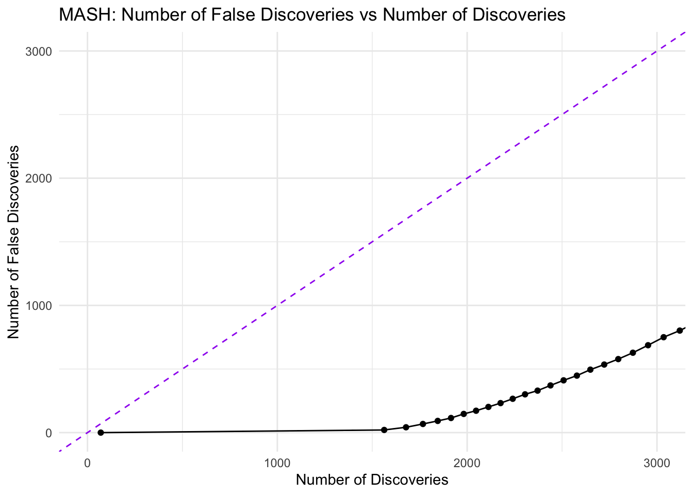
Compare MASH (fdr_df_mash) and FASH (fdr_df)
# Calculate true FDR for FASH
threshold_vec <- seq(0, 1, by = 0.01)
fdr_vec_fash <- numeric(length(threshold_vec))
for (i in 1:length(threshold_vec)) {
num_discoveries_fash <- sum(fdr_df$cumulative_fdr <= threshold_vec[i])
num_false_discoveries_fash <- sum(fdr_df$cumulative_fdr <= threshold_vec[i] & fdr_df$type == "A")
fdr_vec_fash[i] <- num_false_discoveries_fash / num_discoveries_fash
}
# Create a data frame for plotting
fdr_df_fash <- data.frame(threshold = threshold_vec, true_fdr = fdr_vec_fash, method = "FASH")
# Calculate true FDR for MASH
fdr_vec_mash <- numeric(length(threshold_vec))
for (i in 1:length(threshold_vec)) {
num_discoveries_mash <- sum(fdr_df_mash$cumulative_fdr <= threshold_vec[i])
num_false_discoveries_mash <- sum(fdr_df_mash$cumulative_fdr <= threshold_vec[i] & fdr_df_mash$type == "A")
fdr_vec_mash[i] <- num_false_discoveries_mash / num_discoveries_mash
}
# Create a data frame for plotting
fdr_df_mash_for_plotting <- data.frame(threshold = threshold_vec, true_fdr = fdr_vec_mash, method = "MASH")
fdr_df_fash_for_plotting$method <- "FASH"
# Combine data for plotting
fdr_df_combined <- rbind(fdr_df_fash_for_plotting, fdr_df_mash_for_plotting)
# Plot the nominal FDR vs true FDR for both methods
ggplot(fdr_df_combined, aes(x = threshold, y = true_fdr, color = method)) +
geom_line() +
geom_point() +
geom_abline(intercept = 0, slope = 1, linetype = "dashed", color = "purple") +
labs(x = "Nominal False Discovery Rate", y = "Actual False Discovery Rate") +
theme_minimal() +
coord_cartesian(xlim = c(0, 1), ylim = c(0, 1)) +
geom_hline(yintercept = sizeA/N, linetype = "dashed", color = "red") +
ggtitle("Nominal FDR vs Actual FDR Curves for MASH and FASH")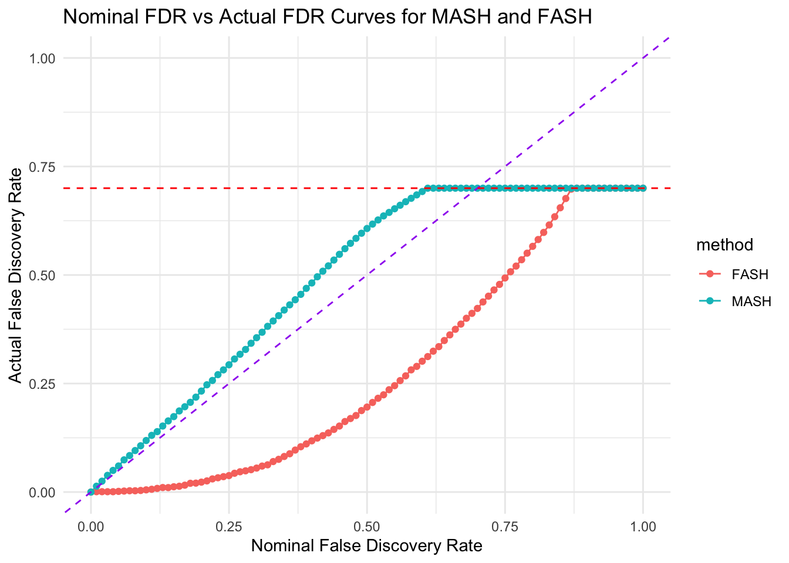
Compare the number of false discoveries against the number of total discoveries for both methods:
threshold_vec <- seq(0, 1, by = 0.001)
num_discoveries_vec_fash <- numeric(length(threshold_vec))
num_false_discoveries_vec_fash <- numeric(length(threshold_vec))
for (i in 1:length(threshold_vec)) {
num_discoveries_vec_fash[i] <- sum(fdr_df$cumulative_fdr <= threshold_vec[i])
num_false_discoveries_vec_fash[i] <- sum(fdr_df$cumulative_fdr <= threshold_vec[i] & fdr_df$type == "A")
}
num_discoveries_df_fash <- data.frame(threshold = threshold_vec, num_discoveries = num_discoveries_vec_fash, num_false_discoveries = num_false_discoveries_vec_fash, method = "FASH")
num_discoveries_vec_mash <- numeric(length(threshold_vec))
num_false_discoveries_vec_mash <- numeric(length(threshold_vec))
for (i in 1:length(threshold_vec)) {
num_discoveries_vec_mash[i] <- sum(fdr_df_mash$cumulative_fdr <= threshold_vec[i])
num_false_discoveries_vec_mash[i] <- sum(fdr_df_mash$cumulative_fdr <= threshold_vec[i] & fdr_df_mash$type == "A")
}
num_discoveries_df_mash <- data.frame(threshold = threshold_vec, num_discoveries = num_discoveries_vec_mash, num_false_discoveries = num_false_discoveries_vec_mash, method = "MASH")
num_discoveries_df_combined <- rbind(num_discoveries_df_fash, num_discoveries_df_mash)
ggplot(num_discoveries_df_combined, aes(x = num_discoveries, y = num_false_discoveries, color = method)) +
geom_line() +
# geom_point() +
geom_abline(intercept = 0, slope = 1, linetype = "dashed", color = "purple") +
labs(x = "Number of Discoveries", y = "Number of False Discoveries") +
theme_minimal() +
ggtitle("Number of False Discoveries vs Number of Discoveries for MASH and FASH") +
coord_cartesian(xlim = c(0, 10000), ylim = c(0, 7000))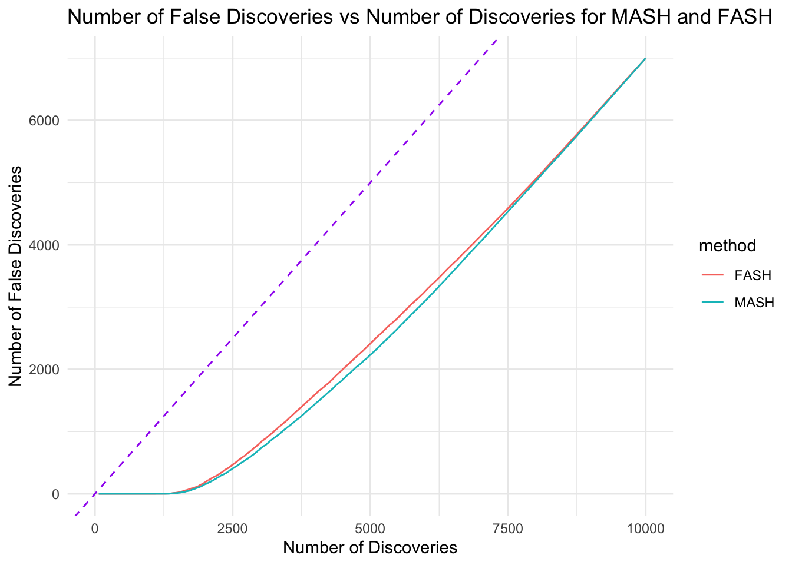
To compare their rankings of eQTLs based on the cumulative FDR, we can compare the rank distribution of each type of eQTLs (A,B,C) based on the two methods:
fdr_df_merge <- rbind(fdr_df %>% mutate(method = "FASH"), fdr_df_mash %>% mutate(method = "MASH"))
ggplot(fdr_df_merge, aes(x = type, y = rank, color = type)) +
geom_boxplot() +
labs(x = "Type", y = "Rank") +
theme_minimal() +
ggtitle("Rank Distribution: FASH vs MASH") +
facet_wrap(~method)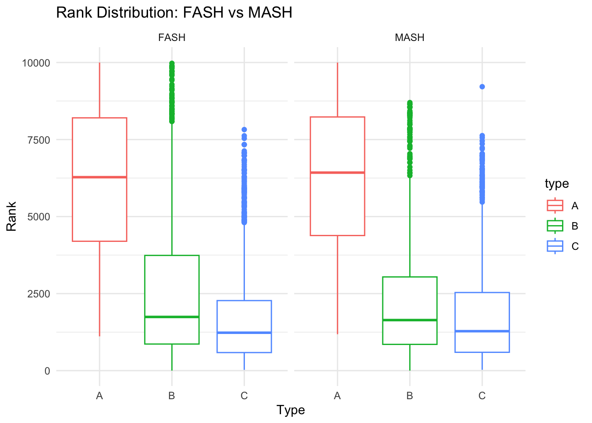
Summary: Overall, FASH tends to make more conservative decision than MASH in terms of the discovery of non-dynamic eQTLs. The actual false discovery rate of FASH tends to be lower than the nominal false discovery rate, while MASH tends to have a higher actual false discovery rate than the nominal false discovery rate. This kind of behavior is expected, as each mixture component of FASH is a L-GP prior that shrinks toward the constant base model. In contrast, the mixture components in MASH have different type of shrinkage tendencies. which gains more modeling flexibility at the cost of less informative shrinkage. Overall, MASH does better job at controlling an actual FDR closer to the nominal level, but FASH does better job at keeping the actual FDR lower than the nominal level. Given a threshold of FDR, MASH is able to find more discoveries than FASH, but the proportion of false discoveries is higher in MASH than in FASH.
Now, let’s consider the question of identifying non-linear dynamic eQTLs. The \(i\)th eQTL is considered non-linear dynamic if its effect \(\beta_i(t)\) is changing non-linearly over time.
To use the FASH method to identify non-linear dynamic eQTLs, we consider \(L = \frac{d^2}{dt^2}\), which corresponds to a base model \(\text{Null}\{L\} = \text{span}\{1, t\}\).
Similarly, the \(i\)th eQTL should be considered non-linear dynamic if the posterior weight \(\pi_0\) of the first mixture component is close to \(1\).
First, we compute the L matrix:
set.seed(123)
p_vec <- 2
psd_iwp_vec <- sort(unique(c(0,seq(0,1, by = 0.05))))
L_vecs <- list()
# create a progress bar
pb <- txtProgressBar(min = 0, max = length(datasets), style = 3)
for (i in 1:length(datasets)) {
setTxtProgressBar(pb, i)
L_vecs[[i]] <- compute_log_likelihood_ospline_seq2(
x = datasets[[i]]$x,
y = datasets[[i]]$y,
p = p_vec,
num_knots = 16,
psd_iwp_vector = psd_iwp_vec,
pred_step = 1,
betaprec = 0.001,
sd_gaussian = sigma[i]
)
}
L_matrix <- do.call(rbind, L_vecs)
save(L_matrix, file = paste0(result_dir, "/L_matrix_nonlinear.rda"))Based on the L-matrix, we optimize the prior weights through EB:
fit.sqp <- mixsqp(L = L_matrix, log = TRUE)Running mix-SQP algorithm 0.3-54 on 10000 x 21 matrix
convergence tol. (SQP): 1.0e-08
conv. tol. (active-set): 1.0e-10
zero threshold (solution): 1.0e-08
zero thresh. (search dir.): 1.0e-14
l.s. sufficient decrease: 1.0e-02
step size reduction factor: 7.5e-01
minimum step size: 1.0e-08
max. iter (SQP): 1000
max. iter (active-set): 20
number of EM iterations: 10
Computing SVD of 10000 x 21 matrix.
Matrix is not low-rank; falling back to full matrix.
iter objective max(rdual) nnz stepsize max.diff nqp nls
1 +1.196228155e-01 -- EM -- 21 1.00e+00 9.22e-01 -- --
2 +1.132032498e-01 -- EM -- 17 1.00e+00 7.78e-03 -- --
3 +1.123090956e-01 -- EM -- 9 1.00e+00 1.25e-03 -- --
4 +1.120303114e-01 -- EM -- 6 1.00e+00 4.76e-04 -- --
5 +1.119264910e-01 -- EM -- 5 1.00e+00 1.84e-04 -- --
6 +1.118847085e-01 -- EM -- 4 1.00e+00 7.47e-05 -- --
7 +1.118672905e-01 -- EM -- 4 1.00e+00 3.13e-05 -- --
8 +1.118599138e-01 -- EM -- 3 1.00e+00 1.33e-05 -- --
9 +1.118567675e-01 -- EM -- 3 1.00e+00 5.66e-06 -- --
10 +1.118554214e-01 -- EM -- 3 1.00e+00 2.42e-06 -- --
1 +1.118548447e-01 +1.967e-05 3 ------ ------ -- --
2 +1.118544118e-01 -1.106e-08 2 1.00e+00 1.81e-06 3 1
Optimization took 0.02 seconds.
Convergence criteria met---optimal solution found.numiter <- nrow(fit.sqp$progress)
plot(1:numiter,fit.sqp$progress$objective,type = "b",
pch = 20,lwd = 2,xlab = "SQP iteration",
ylab = "objective",xaxp = c(1,numiter,numiter - 1))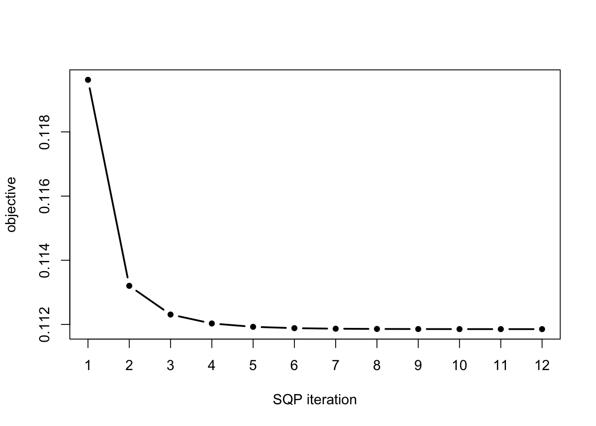
| Version | Author | Date |
|---|---|---|
| cae5291 | Ziang Zhang | 2024-05-27 |
prior_weight <- data.frame(p = rep(p_vec, each = length(psd_iwp_vec)), psd_iwp = psd_iwp_vec, prior_weight = fit.sqp$x)head(prior_weight) p psd_iwp prior_weight
1 2 0.00 0.9779229
2 2 0.05 0.0220771
3 2 0.10 0.0000000
4 2 0.15 0.0000000
5 2 0.20 0.0000000
6 2 0.25 0.0000000The estimated overall proportion of linear eQTLs (including non dynamic eQTLs) is:
prior_weight %>%
filter(psd_iwp == 0) %>%
pull(prior_weight)[1] 0.9779229With the estimated prior, we can now perform the posterior inference for each dataset:
num_datasets <- length(datasets)
num_weights <- sum(prior_weight$prior_weight != 0)
posterior_weights_matrix <- matrix(nrow = num_datasets, ncol = num_weights)
# Loop through each dataset and perform fitting
fitted_datasets <- list()
# start a progress bar
pb <- txtProgressBar(min = 0, max = num_datasets, style = 3)
for (i in seq_along(datasets)) {
setTxtProgressBar(pb, i)
dataset <- datasets[[i]]
fit_result_final <- fit_ospline_with_prior2(
num_cores = 1,
x = dataset$x,
y = dataset$y,
num_knots = 16,
prior_weight = prior_weight,
betaprec = 0.001,
sd_gaussian = sigma[i],
pred_step = 1
)
fitted_datasets[[i]] <- aggregate_fit_with_prior(x = dataset$x, fit_results_with_prior = fit_result_final)$summary_df
posterior_weights_matrix[i, ] <- fit_result_final$posterior_weights[, "posterior_weight"]
}
colnames(posterior_weights_matrix) <- paste(as.character(fit_result_final$posterior_weights[, "p"]),
as.character(fit_result_final$posterior_weights[, "psd_iwp"]), sep = "_")
save(posterior_weights_matrix, file = paste0(result_dir, "/posterior_weights_matrix_nonlinear.rda"))
save(fitted_datasets, file = paste0(result_dir, "/fitted_datasets_nonlinear.rda"))We can visualize the posterior weights for each dataset:
posterior_weights_df <- as.data.frame(posterior_weights_matrix)
posterior_weights_df$id <- (c(1:length(sigma)))
melted_data <- melt(posterior_weights_df, id.vars = "id")
melted_data$variable2 <- sub("_.*", "", melted_data$variable)
melted_data$variable3 <- (round(as.numeric(sub("*._", "", melted_data$variable)), 3))
ggplot(melted_data, aes(x = id, y = value, fill = variable3)) +
geom_bar(stat = "identity") +
labs(x = "Observation ID", y = "Weight", fill = "PSD") +
theme_minimal() +
scale_fill_gradient(low = "white", high = "blue") +
ggtitle("FASH: Structure Plot of Posterior Weights") +
coord_flip() 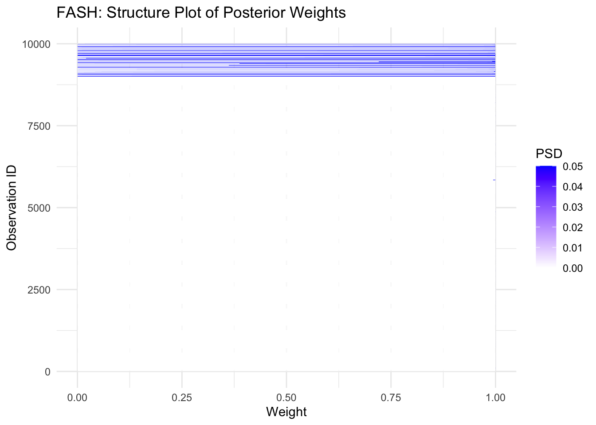
| Version | Author | Date |
|---|---|---|
| cae5291 | Ziang Zhang | 2024-05-27 |
Compute the local false discovery rate (lfdr):
set.seed(123)
lfdr <- posterior_weights_matrix[,1]
fdr_df <- data.frame(eQTL = 1:length(lfdr), fdr = lfdr, type = rep(c("A", "B", "C"), times = c(sizeA, sizeB, sizeC)))
fdr_df <- fdr_df[order(fdr_df$fdr), ] # ordering it
fdr_df$cumulative_fdr <- cumsum(fdr_df$fdr)/seq_along(fdr_df$fdr)
fdr_df$rank <- 1:length(lfdr)ggplot(fdr_df, aes(x = 1:length(lfdr), y = cumulative_fdr, col = type)) +
geom_point() +
geom_hline(yintercept = 0.05, linetype = "dashed", color = "purple") +
labs(x = "Ordered eQTLs", y = "Cumulative FDR", col = "Type") +
theme_minimal() +
ggtitle("Cumulative FDR Plot") +
scale_color_manual(values = c("red", "blue", "green"))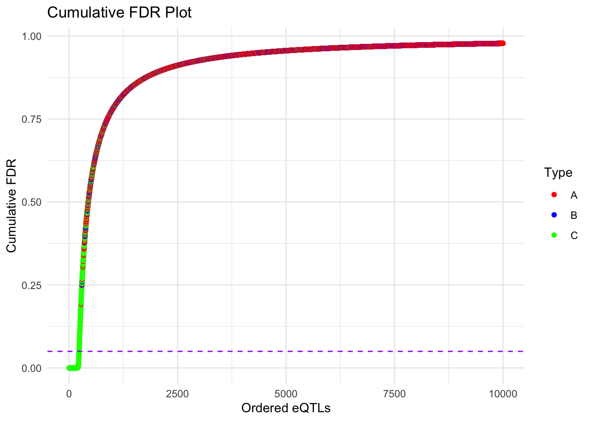
| Version | Author | Date |
|---|---|---|
| cae5291 | Ziang Zhang | 2024-05-27 |
How many false discoveries are there?
alpha <- 0.05
num_discoveries <- sum(fdr_df$cumulative_fdr <= alpha)
num_false_discoveries <- sum(fdr_df$cumulative_fdr <= alpha & fdr_df$type != "C")
true_false_discovery_rate <- num_false_discoveries/num_discoveries
true_false_discovery_rate[1] 0Plot the curve of nominal false discovery rate (threshold) against the actual false discovery rate:
# Calculate true FDR for FASH
threshold_vec <- seq(0, 1, by = 0.01)
fdr_vec <- numeric(length(threshold_vec))
for (i in 1:length(threshold_vec)) {
num_discoveries <- sum(fdr_df$cumulative_fdr <= threshold_vec[i])
num_false_discoveries <- sum(fdr_df$cumulative_fdr <= threshold_vec[i] & fdr_df$type != "C")
fdr_vec[i] <- num_false_discoveries / num_discoveries
}
# Create a data frame for plotting
fdr_df_fash <- data.frame(threshold = threshold_vec, true_fdr = fdr_vec)
# Plot the nominal FDR vs true FDR for FASH
ggplot(fdr_df_fash, aes(x = threshold, y = true_fdr)) +
geom_line() +
geom_point() +
geom_abline(intercept = 0, slope = 1, linetype = "dashed", color = "purple") +
labs(x = "(Nominal) False Discovery Rate", y = "(Actual) False Discovery Rate") +
theme_minimal() +
ggtitle("Nominal FDR vs Actual FDR Curve for FASH") +
coord_cartesian(xlim = c(0, 1), ylim = c(0, 1)) +
geom_hline(yintercept = (N - sizeC)/N, linetype = "dashed", color = "red")Warning: Removed 1 row containing missing values or values outside the scale range
(`geom_line()`).Warning: Removed 1 row containing missing values or values outside the scale range
(`geom_point()`).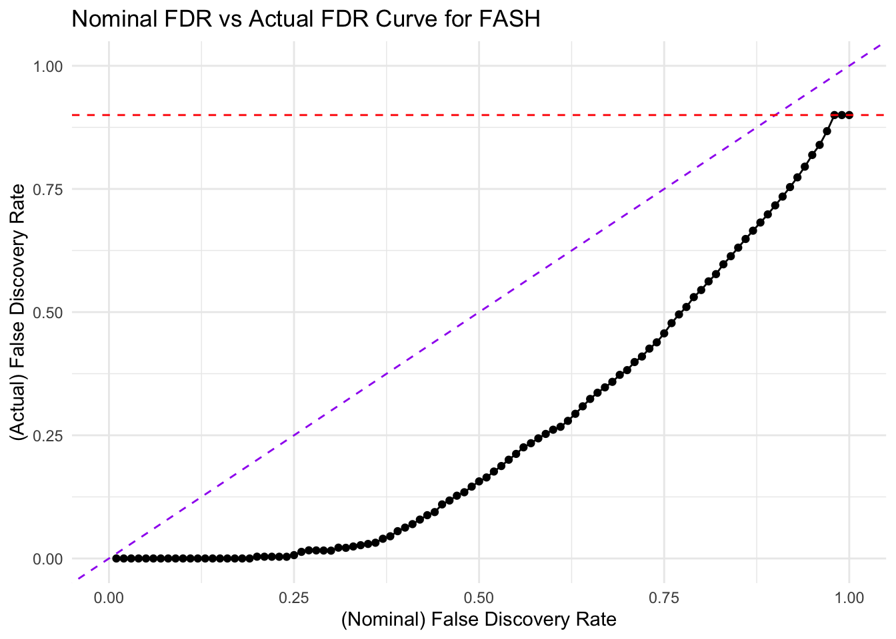
| Version | Author | Date |
|---|---|---|
| cae5291 | Ziang Zhang | 2024-05-27 |
Also compare the number of false discoveries with the number of discoveries at different level of threshold, where number of discoveries is plotted against number of false discoveries:
threshold_vec <- seq(0, 1, by = 0.01)
num_discoveries_vec <- numeric(length(threshold_vec))
num_false_discoveries_vec <- numeric(length(threshold_vec))
for (i in 1:length(threshold_vec)) {
num_discoveries_vec[i] <- sum(fdr_df$cumulative_fdr <= threshold_vec[i])
num_false_discoveries_vec[i] <- sum(fdr_df$cumulative_fdr <= threshold_vec[i] & fdr_df$type != "C")
}
num_discoveries_df <- data.frame(threshold = threshold_vec, num_discoveries = num_discoveries_vec, num_false_discoveries = num_false_discoveries_vec)
ggplot(num_discoveries_df, aes(x = num_discoveries, y = num_false_discoveries)) +
geom_line() +
geom_point() +
geom_abline(intercept = 0, slope = 1, linetype = "dashed", color = "purple") +
labs(x = "Number of Discoveries", y = "Number of False Discoveries") +
theme_minimal() +
# geom_vline(xintercept = sizeC, linetype = "dashed", color = "red") +
ggtitle("FASH: Number of False Discoveries vs Number of Discoveries") +
coord_cartesian(xlim = c(0, 1000), ylim = c(0, 1000))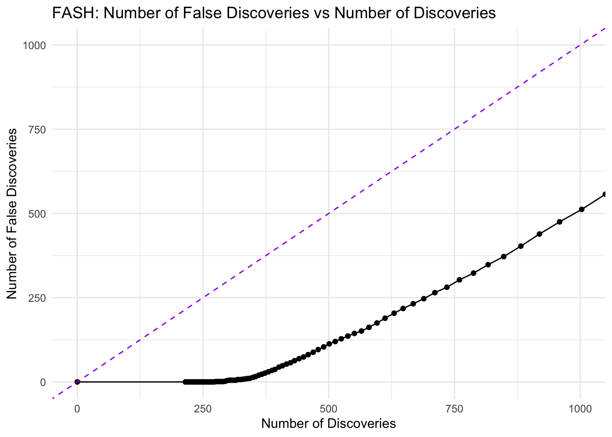
| Version | Author | Date |
|---|---|---|
| cae5291 | Ziang Zhang | 2024-05-27 |
Visualize the rank distribution of eQTLs based on the cumulative FDR:
ggplot(fdr_df, aes(x = type, y = rank, color = type)) +
geom_boxplot() +
labs(x = "Type", y = "Rank") +
theme_minimal() +
ggtitle("Rank Distribution: FASH")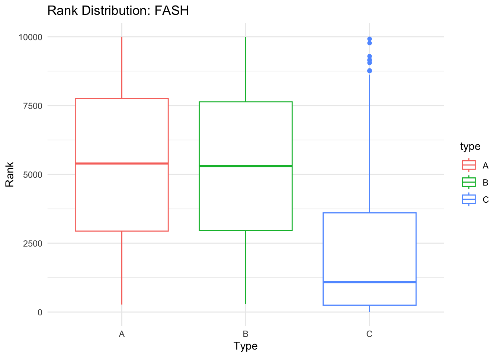
| Version | Author | Date |
|---|---|---|
| cae5291 | Ziang Zhang | 2024-05-27 |
Summary: The FASH method is able to identify many non-linear dynamic eQTLs, with a well-controlled false discovery rate. The actual false discovery rate of FASH tends to be more conservative than the nominal false discovery rate, which is expected again as each mixture component of FASH is a L-GP prior that shrinks toward the base model.
sessionInfo()R version 4.3.1 (2023-06-16)
Platform: aarch64-apple-darwin20 (64-bit)
Running under: macOS Monterey 12.7.4
Matrix products: default
BLAS: /Library/Frameworks/R.framework/Versions/4.3-arm64/Resources/lib/libRblas.0.dylib
LAPACK: /Library/Frameworks/R.framework/Versions/4.3-arm64/Resources/lib/libRlapack.dylib; LAPACK version 3.11.0
locale:
[1] en_US.UTF-8/en_US.UTF-8/en_US.UTF-8/C/en_US.UTF-8/en_US.UTF-8
time zone: America/Toronto
tzcode source: internal
attached base packages:
[1] parallel splines stats graphics grDevices utils datasets
[8] methods base
other attached packages:
[1] mashr_0.2.79 ashr_2.2-63 lubridate_1.9.3 forcats_1.0.0
[5] stringr_1.5.0 dplyr_1.1.3 purrr_1.0.2 readr_2.1.4
[9] tidyr_1.3.0 tibble_3.2.1 tidyverse_2.0.0 mixsqp_0.3-54
[13] reshape2_1.4.4 ggplot2_3.5.1 Matrix_1.6-3 TMB_1.9.7
[17] BayesGP_0.1.1 workflowr_1.7.1
loaded via a namespace (and not attached):
[1] gtable_0.3.4 xfun_0.40 bslib_0.5.1 processx_3.8.2
[5] lattice_0.21-8 callr_3.7.3 tzdb_0.4.0 vctrs_0.6.4
[9] tools_4.3.1 ps_1.7.5 generics_0.1.3 fansi_1.0.5
[13] pkgconfig_2.0.3 SQUAREM_2021.1 assertthat_0.2.1 truncnorm_1.0-9
[17] lifecycle_1.0.3 farver_2.1.1 compiler_4.3.1 git2r_0.33.0
[21] munsell_0.5.0 getPass_0.2-4 httpuv_1.6.11 htmltools_0.5.6.1
[25] sass_0.4.7 yaml_2.3.7 later_1.3.1 pillar_1.9.0
[29] jquerylib_0.1.4 whisker_0.4.1 rmeta_3.0 cachem_1.0.8
[33] abind_1.4-5 tidyselect_1.2.0 digest_0.6.33 mvtnorm_1.2-3
[37] stringi_1.7.12 labeling_0.4.3 rprojroot_2.0.3 fastmap_1.1.1
[41] grid_4.3.1 invgamma_1.1 colorspace_2.1-0 cli_3.6.1
[45] magrittr_2.0.3 utf8_1.2.3 withr_2.5.1 scales_1.3.0
[49] promises_1.2.1 timechange_0.2.0 rmarkdown_2.25 httr_1.4.7
[53] hms_1.1.3 evaluate_0.22 knitr_1.44 irlba_2.3.5.1
[57] rlang_1.1.1 Rcpp_1.0.11 glue_1.6.2 rstudioapi_0.15.0
[61] jsonlite_1.8.7 R6_2.5.1 plyr_1.8.9 fs_1.6.3